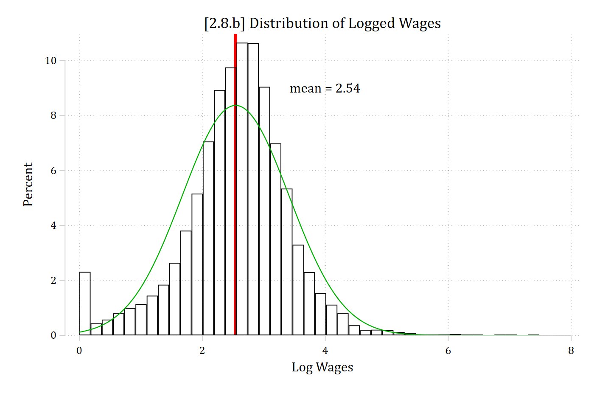
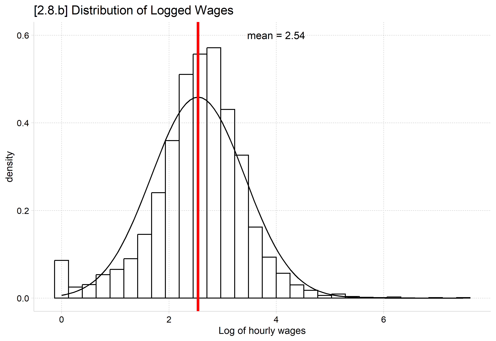
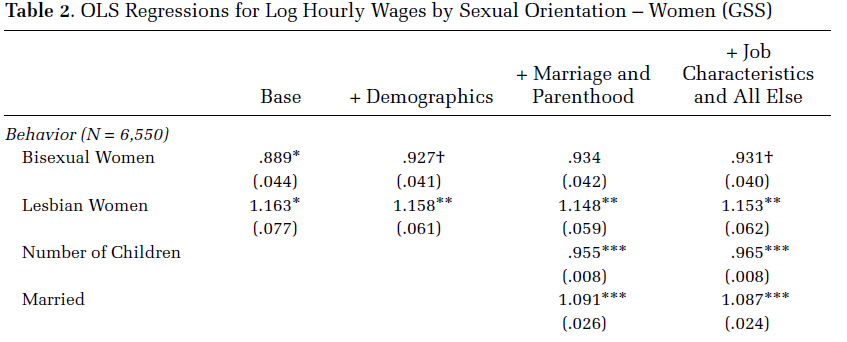
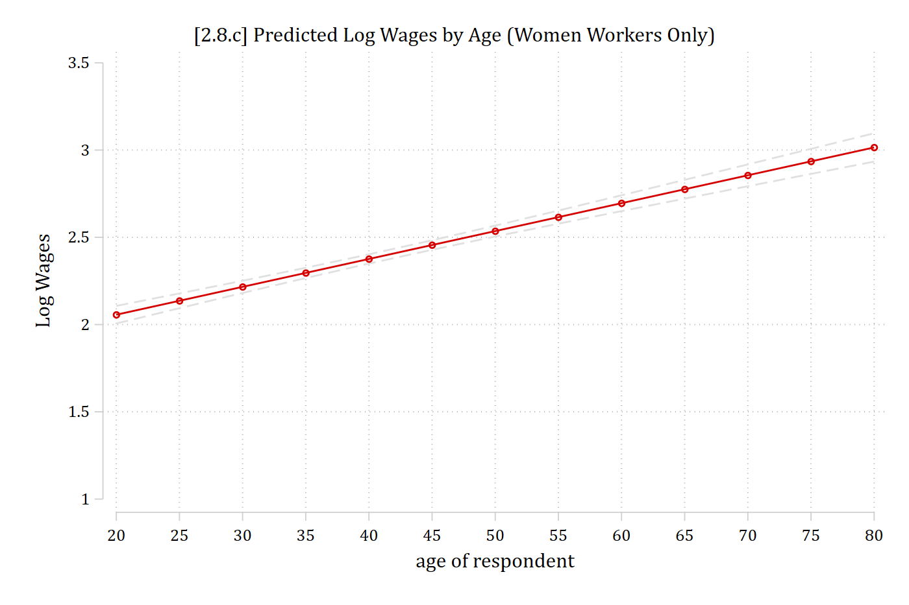
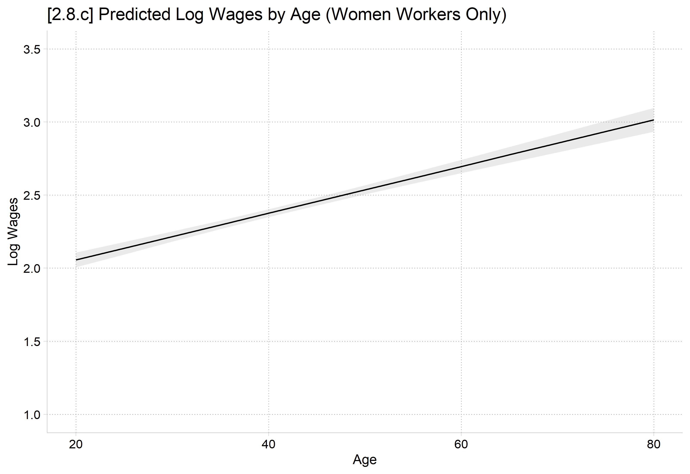
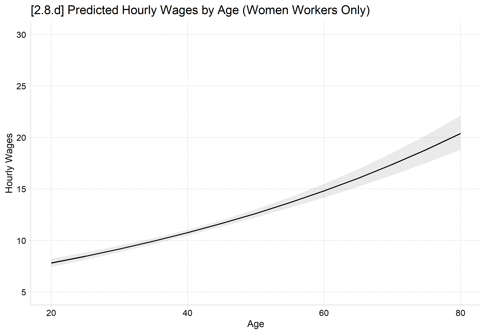
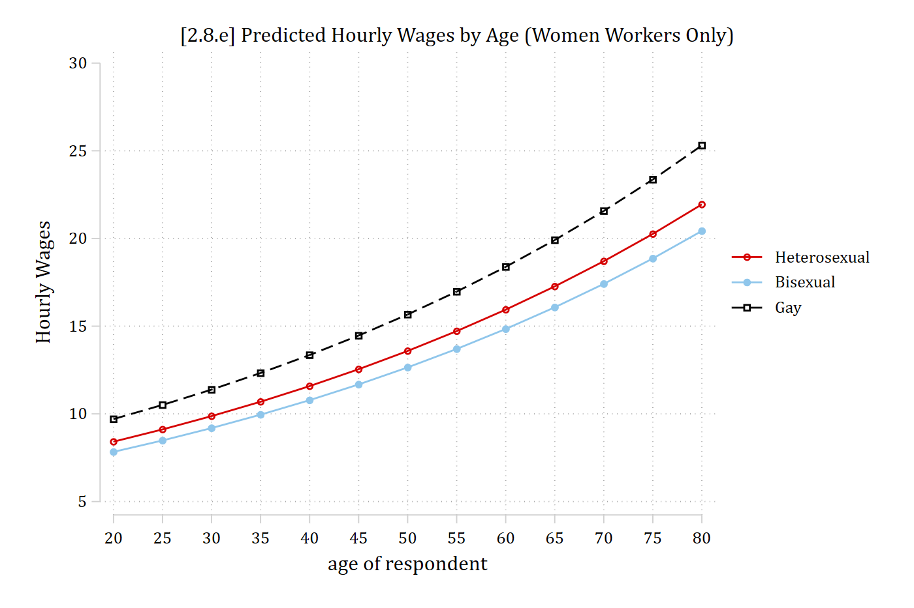
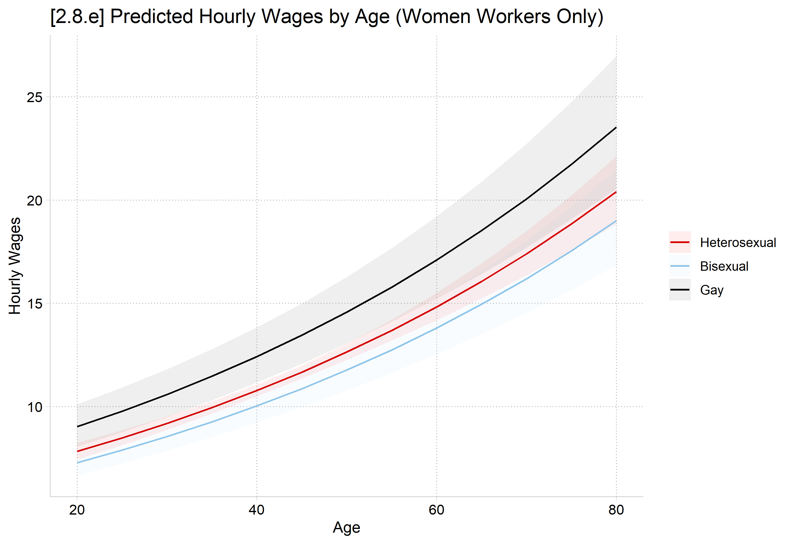
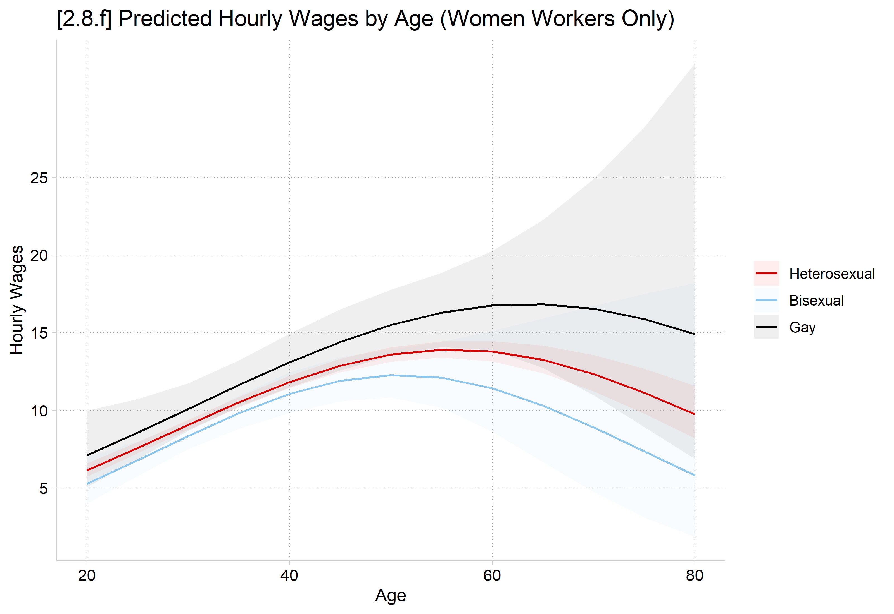

A linear regression model can be used in which the dependent variable has been logged and then a linear regression model has been fit
E.g., Often used when income or wages is the DV due to a strong positive skew
Logged DV models introduce complications for interpretation for:
Coefficients
Predictions
Marginal effects
Many of these complications mirror those in binary regression models (e.g., logit and probit)
Linear regression models with logged DVs are inherently nonlinear via a transformation of the dependent variable
The DV is the natural log of the original variable; e.g. ln(wages) is a common DV in labor market analyses
Need a refresher on logs and natural logs? The Wikipedia article is quite good. The natural logarithm has the mathematical constant e (≈2.718) as its base
\[\log_{e}x = \ln(x) \qquad c = \ln(x) \qquad e^{c} = x \qquad \ln(e) = 1 \qquad e^{1} = e\]
Why log your DV? Positively skewed DVs are a common motivation*
Recall that regression models expectations (means) and conditional expectations. Is the mean a good summary of a positively skewed distribution? (See graph below)
*Poisson models are a possible alternative (Gould 2011). More on these in the Count section of the class
hist logwages, percenttitle("[2.8.b] Distribution of Logged Wages") /// fc(none) xline(2.54, lcolor(red) lstyle(solid) lwidth(thick)) ///normaltext(9 4 "mean = 2.54")
(bin=41, start=0, width=.18245773)

ggplot(smi, aes(logwages)) +geom_histogram(aes(y =after_stat(density)), fill =NA, color ="black") +stat_function(fun = dnorm,args =list(mean =mean(smi$logwages), sd =sd(smi$logwages))) +geom_vline(xintercept =2.54, color ="red", linewidth =1.5) +annotate("text", x =4, y = .6, label ="mean = 2.54") +labs(title ="[2.8.b] Distribution of Logged Wages", x ="Log of hourly wages")

Logging positively skewed variables helps normalize the distribution/pull in outliers
Logged DV regression models
First, a little bit more math review:
\[\exp(a + b) = \exp(a)*\exp(b)\]
\[\log\left\lbrack \exp(a + b) \right\rbrack = a + b\]
An exponential model is multiplicative on the y metric
The ratio y(xk+1, \(\mathbf{x}_{- k}\))/y(xk, \(\mathbf{x}_{- k}\)) is the factor change in y for a unit increase in xk; it is a multiplicative effect with an increase in xk leading to y changing by a factor of \(\exp(\beta_{k})\):
Factor and percentage changes can be used interchangeably; they provide the same information. Pick your favorite and be consistent in your interpretations:
For a unit increase in xk, y is expected to change by 100[exp(β1)-1] percent, holding other variables constant
For a unit increase in xk, y is expected to be exp(βk) times larger (or smaller), holding other variables constant
Logged DV regression model ex: sexual orientation and wages
For all analyses, I use the log of wages as the dependent variable to help normalize the distribution and minimize the influence of outliers. All models are linear regression models; I report factor change coefficients in the text and tables that are the exponentiated regression coefficients. The omitted focal independent variable category for all models is heterosexual; factor change coefficients less than one for bisexual or gay/lesbian individuals therefore represent lower earnings than those of heterosexual individuals.
… Any remaining unexplained portion of the wage gap is suggestive of discrimination—however, it is impossible to provide a causal test of discrimination without an experimental design. Therefore, unobserved factors outside of those included in the model could still account for any unexplained amount of the wage gap.
*NOTE: Minor rewrites here for clarity of example out of context of the full article

Side note: I recommend titling a table “linear regression” rather than “OLS regression” as OLS is the estimator, not the model type.
Table 2 shows results of regression models of log wages for women… bisexual women earn 11 percent less than heterosexual women at baseline (eb = .89, p < .05). After accounting for all other factors, bisexual women still earn 7 percent less than comparable heterosexual women, providing support for Hypothesis 6 (eb = .93, p < .10)… Lesbian women earn more than heterosexual women at baseline (eb = 1.16, p < .05). This difference remains significant and substantively similar in size after accounting for all factors (eb = 1.15, p < .01).
qui margins, at(age=(20(5)80))marginsplot, recastci(rline) ciopts(lpat(dash) col(gs14)) ///title("[2.8.c] Predicted Log Wages by Age (Women Workers Only)") ///ytitle("Log Wages") ylab(1(0.5)3.5)
Variables that uniquely identify margins: age

# Model from Table 2 of Mize (2016) ASR: women workers onlywomen <- smi |>filter(male ==0) |>mutate(across(c(partners75, educcat, race, region4, isco88cat), as_factor)) |>droplevels()womendesign <-svydesign(ids =~sampcode, weights =~wtssnr, data = women)womenmod <-svyglm(logwages ~ partners75 + age + educcat + race + year + numchild + married + region4 + metro + parttime + isco88cat,design = womendesign)# exponentiate = TRUE for factor change coefficientsmodelsummary(womenmod, exponentiate =TRUE, stars =c("*"= .05, "**"= .01, "***"= .001))
(1)
* p < 0.05, ** p < 0.01, *** p < 0.001
(Intercept)
25685.979**
(86067.824)
partners75Bisexual
0.931
(0.040)
partners75Gay
1.153**
(0.062)
age
1.016***
(0.001)
educcathigh school
1.389***
(0.070)
educcatjunior college
1.730***
(0.094)
educcatbachelor
1.899***
(0.109)
educcatgraduate
2.445***
(0.153)
raceblack
1.034
(0.032)
raceother
0.999
(0.054)
year
0.996*
(0.002)
numchild
0.965***
(0.008)
married
1.087***
(0.024)
region4Midwest
0.889**
(0.039)
region4South
0.856***
(0.038)
region4West
0.979
(0.047)
metro
1.050
(0.033)
parttime
0.842***
(0.024)
isco88catlo controllers
0.844***
(0.025)
isco88catroutine nonmanual
0.659***
(0.023)
isco88catsempl with emp
0.717***
(0.056)
isco88catsempl without empl
0.557***
(0.042)
isco88catmanual supervisor
0.916
(0.083)
isco88catskilled manual
0.742***
(0.042)
isco88catsemi-unskilld manual
0.611***
(0.025)
isco88catfarm labor
0.572***
(0.078)
isco88catselfempl farm
0.645
(0.216)
Num.Obs.
6550
R2
0.256
R2 Adj.
-14.768
AIC
14586.8
BIC
290771.5
Log.Lik.
-145262.719
F
73.379
RMSE
0.73
# Everyone at each age, keeping the survey weights for averagingagegrid <-datagrid(newdata = women, age =seq(20, 80, 5), grid_type ="counterfactual")plot_predictions(womenmod, by ="age", newdata = agegrid, wts ="wtssnr") +scale_y_continuous(breaks =seq(1, 3.5, .5), limits =c(1, 3.5)) +labs(title ="[2.8.c] Predicted Log Wages by Age (Women Workers Only)",x ="Age", y ="Log Wages")

The effect on the log of wages is linear (but how would you interpret log wages?)
Interpretation in the natural metric of the DV
Logged DV regression models can be very useful; however, you almost certainly do not set out to study effects on the log of wages. Interpreting the factor change coefficients is one useful alternative
Factor change coefficients are in the natural metric of the DV (a plus), but are multiplicative rather than additive (generally, a negative)
Focusing on interpreting predictions and marginal effects (which are calculated from the predictions) hold key benefits here as you can convert the prediction back into the natural metric of the DV (in this example, wages) and MEs are additive effects (just like your trusty linear regression coefficients)
For our linear regression examples earlier, \(\eta\) (the prediction) was easy to solve for as it was just the result of solving the regression equation for \(\mathbf{x\beta}\)
This is because our linear regression model coefficients were already in the natural metric of the DV (e.g. occupational prestige)
Converting predictions to natural metric of DV
For logged DV regression models, fairly straightforward to transform the \(\mathbf{x\beta}\) prediction (which is in \(ln(y)\) metric) back to the natural y metric by exponentiating it*. E.g.
Note the formula for marginal effects are identical in logged DV regression models as they are in linear models (i.e., the formulas shown earlier in these notes are equally applicable in both types of models)
The only difference is that the formula for \(\eta\) has changed
I.e. We are still interpreting effects in terms of differences in predictions; the only thing that has changed is how we get to the prediction (\(\eta\)) of interest
qui margins, at(age=(20(5)80)) expression(exp(predict(xb)))marginsplot, recastci(rline) ciopts(lpat(dash) col(gs14)) ///title("[2.8.d] Predicted Hourly Wages by Age (Women Workers Only)") ///ytitle("Hourly Wages") ylab(5(5)30)
Variables that uniquely identify margins: age
# transform = exp puts the predictions in the wage metricplot_predictions(womenmod, by ="age", newdata = agegrid, wts ="wtssnr",transform = exp) +scale_y_continuous(breaks =seq(5, 30, 5), limits =c(5, 30)) +labs(title ="[2.8.d] Predicted Hourly Wages by Age (Women Workers Only)",x ="Age", y ="Hourly Wages")

Note the nonlinearities. This is despite no age2 coefficient in the model. The model is inherently nonlinear in the wages metric due to ln(wages) used as the DV
qui margins, at(age=(20(5)80) partners75=(1 2 3)) expression(exp(predict(xb)))marginsplot, noci title("[2.8.e] Predicted Hourly Wages by Age (Women Workers Only)") ///ytitle("Hourly Wages") ylab(5(5)30)
Variables that uniquely identify margins: age partners75

agesexgrid <-datagrid(newdata = women, age =seq(20, 80, 5), partners75 = unique,grid_type ="counterfactual")plot_predictions(womenmod, by =c("age", "partners75"), newdata = agesexgrid,wts ="wtssnr", transform = exp) +scale_y_continuous(breaks =seq(5, 30, 5)) +labs(title ="[2.8.e] Predicted Hourly Wages by Age (Women Workers Only)",x ="Age", y ="Hourly Wages")

*Note the interaction effect (e.g. size of sexuality gaps vary at different ages) despite no interaction terms in model. Nonlinearities produce interaction effect
What happens when we add age2 to the model? Even more nonlinearities and interaction effects. Just as in linear regression, in loglinear regression the polynomial allows for the slope of the prediction line to change at some point. Here the effect reverses at higher ages.
eststore smimodqui margins, at(age=(20(5)80) partners75=(1 2 3)) expression(exp(predict(xb)))marginsplot, noci title("[2.8.f] Predicted Hourly Wages by Age (Women Workers Only)") ///ytitle("Hourly Wages") ylab(0(5)25)
Variables that uniquely identify margins: age partners75
smimod <-svyglm(logwages ~ partners75 *poly(age, 2, raw =TRUE) + educcat + race + year + numchild + married + region4 + metro + parttime + isco88cat,design = womendesign)plot_predictions(smimod, by =c("age", "partners75"), newdata = agesexgrid,wts ="wtssnr", transform = exp) +scale_y_continuous(breaks =seq(0, 25, 5)) +labs(title ="[2.8.f] Predicted Hourly Wages by Age (Women Workers Only)",x ="Age", y ="Hourly Wages")

Logged DV regression models—marginal effects
The coefficients are no longer directly interpretable when we have quadratic and/or interaction terms as we do for the model presented in the plot above
Marginal effects can still provide an overall summary for the effects of interest—for this example, the effect of sexual identity for women
Remember to exponentiate the predictions when you calculate the MEs so you are in the wage metric instead of the ln(wage) metric [which will be the default]
Bisexual women earn about $1.19 less an hour than heterosexual women
On average, lesbian women earn about $1.68 more per hour than heterosexual women and about $2.87 more than bisexual women
These interpretations are useful and straightforward summaries of the effect of sexual identity—despite the rather complicated model that produced them
I would include these and the plot above. Probably start with the overall effects (MEs) and then move on to the complications (plot)